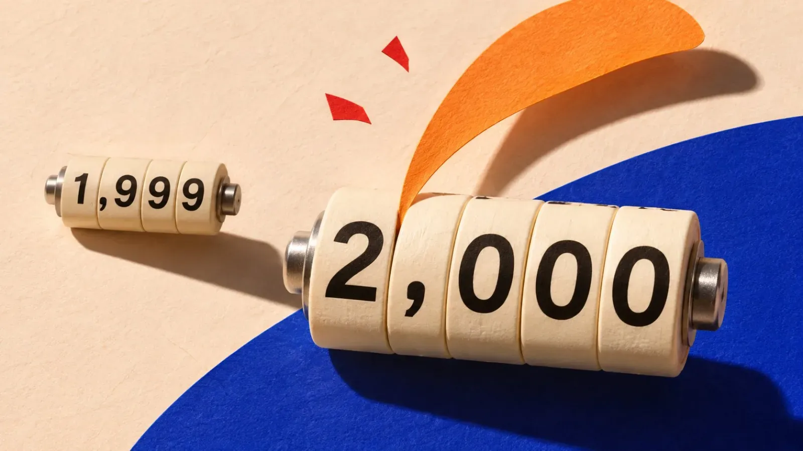
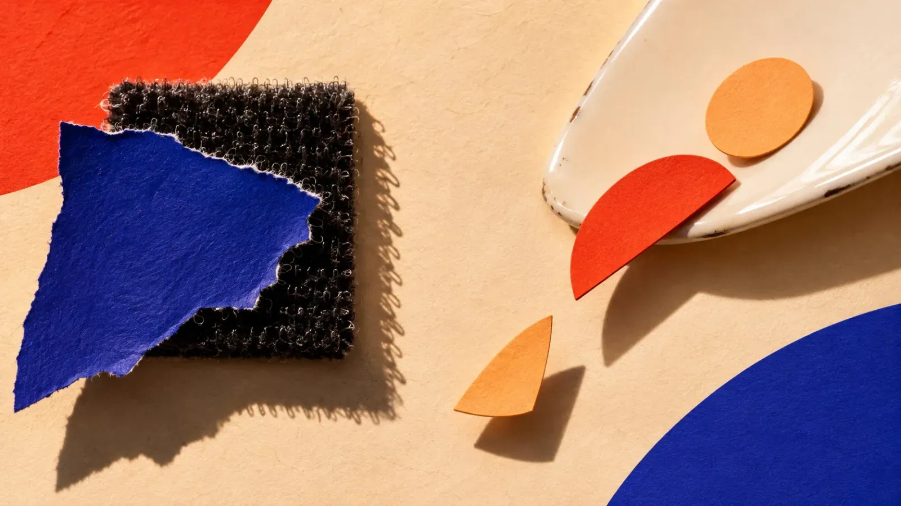
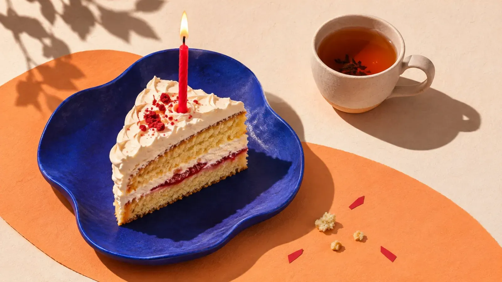

Learn to Be Glad
The counter under your profile jumps from 1,999 to 2,000.
Your heart does a little skip. A tiny one. Then your sensible side clears its throat like a head waiter who has spotted a guest without a tie, and says: "Now don't make a thing of it."
So you don't make a thing of it. No post, no "thank you, lovelies", no confetti. When someone later asks whether you celebrated, you write "I never do", as casually as if they'd asked whether you sing while brushing your teeth. Then you keep scrolling. Tomorrow it's the next number's turn.
I've read that sentence so often that I can say it along. And it isn't only about followers. It's about the project that's finally done. The exam. The bread that, for the first time, doesn't look like a paving stone. Joy knocks, very politely, and we pretend nobody's home.
That's what this is about. The small things. Taking a compliment for once. Small reasons to celebrate. And being proud of something without apologising for it.

The Conveyor Belt
Work is no different. One job is done, and before the email with the attachment has even left, the next one is already on the desk. Tick, next. Tick, next. At some point you notice you're not working anymore, you're standing at a conveyor belt. Only the belt runs straight through your head, and nobody can find the red button.
The nasty part: the belt feels like diligence. Like discipline. Like someone who has their life together. And that's true. It's just that nothing ever arrives for that someone.
Psychology even has a name for it: the arrival fallacy. We believe we'll be happy once we reach the goal. Then we reach it, and the happiness lasts shorter than the queue at the supermarket checkout. So we set the next goal, because surely it'll work there. Spoiler: it doesn't work there either.
Then there's a second trick our heads play: what's unfinished sticks, what's finished drops out. A waiter keeps every open order in their head, no notepad needed. The moment the bill is paid, it's gone. That's exactly how your memory treats your tasks.
Your to-do list has moved into your head for good. Your ta-da list doesn't even have a key. You know to the minute what's still missing. What you've achieved, you can't remember.
Self-Praise Stinks
In Germany we have a saying we learn before we can tie our shoes: Eigenlob stinkt. Self-praise stinks. Whoever praises themselves is conceited, whoever is glad is loud, and whoever is loud stands out. And standing out is about the last thing a proper person wants.
So we learned to talk ourselves down. "It was just a quick thing." "I got lucky." "Oh, anyone could do that." We've become so good at it that we do it even when someone else praises us. Self-praise stinks, and to be on the safe side we air out everyone else's praise too.
Our brain helps along nicely. Bad weighs more for us than good, that's pretty well researched. One piece of criticism echoes for days, ten compliments evaporate by dinner.
Picture it like this: for bad experiences our brain is like Velcro, for good ones like Teflon. One sticks, the other slides off like a fried egg from the good pan.
That used to make sense. If you overlooked the one snake on the steppe, you never got another chance to enjoy the hundred lovely flowers. But there are no snakes on your desk. There's an email where someone writes "Thanks, great job", and your stone-age brain reads it, nods and throws it away like a flyer.
And then there's the fear of the fall. If you never get your hopes up, you can't be disappointed. Sounds sensible. Unfortunately it's insurance you pay into every day and that never pays out. 🙃

Thank You Is a Whole Sentence
Let's start with the easiest thing, which is also the hardest: taking a compliment.
Someone says: "That turned out really beautiful." And you say... well? Most of us have a whole drawer full of answers. Waving it off. Downplaying. Instantly pointing out the flaw nobody else would have seen. "But look, down there on the left, it's crooked." Congratulations, now everyone sees it.
Waving off a compliment tells the other person, quite casually: you were wrong. You have no idea. That's not modest, it's actually rather rude. Someone just gave you a present, and you hand it back at the door because the bow doesn't match your coat.
The answer to a compliment is "Thank you". Full stop. No comma, no "but", no small print. Thank you is a whole sentence. If you like, you can add something that shares the joy instead of hiding it: "Thank you, there's real work in it." Or: "Thank you, I was happy myself when it was done." That's not showing off. That's honest.
At first it feels like walking naked across the market square. By the third time, only like walking across it in a bathrobe. And at some point you notice there was nobody on the square who thinks you're conceited. There was only someone who wanted to say something nice and is now glad it landed.
Small Reasons to Celebrate
We save celebrating for the big things. Weddings, round birthdays, promotions, the house paid off. In between lie years in which apparently nothing happened that was worth a slice of cake.
Yet life is full of small reasons. The 2,000 followers. The job that's done. The phone call you dodged for three days that then took four minutes. The laundry that's not only washed but actually folded, which in some households counts as a miracle. The first day in a long time when you simply felt good.
Followers especially get waved off. "It's just a number." "It's not that important." But that forgets who got you there. Behind every one of those numbers is a person who decided at some point that they wanted to see more of you. Ninety-nine percent of them you'll barely get to know, that's true. But the one percent are people you'll end up talking to. People you get to know. People you might even come to love. So celebrate yourself. And celebrate your people.
Nobody's asking for a cake with sparklers. Celebrating can mean the good tea instead of the bag from the bulk pack. A little post. A message to someone who'll be happy with you. A loud "Ha!" in the empty kitchen. The cat may look irritated, but cats always look irritated, it's their job.
And then there's your birthday. Not the round one, just the ordinary one, the thirty-fourth or the forty-seventh. Lots of people let it slip by quietly, "it's just a day like any other", except that the year counter ticks up by one. Which is even true. The calendar doesn't care. But this day is about you, and that's reason enough.
Invite a few friends, even if it feels a bit silly at first, as if you were building yourself a stage. And even if you think it'll just be stress. It doesn't have to be a big party. An evening is enough, a cake, a round of pizza. The people who like you are often just waiting for you to let them.
And years later, you'll remember exactly that evening. The people who helped you start the new year with joy, instead of with a sigh in front of the mirror and the thought: "Great, another year older." Celebrate it. 🎂

Allowed to Be Proud
Pride has a bad reputation. In English the proverb even says it straight out: pride goes before a fall. So we threw pride and arrogance into the same pot and put the lid on. But pride and arrogance aren't siblings. Arrogance looks down on others. Pride looks back on your own path.
And that's the trick: you're allowed to be proud not just of results, but of paths. Of sticking with it even when it was tough. Of daring even though your hands were shaking. Of being able to do something today that you couldn't do a year ago, even if it isn't perfect yet. Perfect is a place nobody has ever arrived at anyway. The postcode doesn't exist.
Being proud of yourself takes nothing from anyone. There's no limited supply of pride that you steal from others when you take a piece for yourself. ❤️
Five Minutes
And now the most important part, so small you almost miss it: leaning back for once. Not for a holiday. Not for a sabbatical. For five minutes.
Joy isn't a fixed amount that simply lands in your account. It grows when you stay with it. When you notice it on purpose, hold on to it, tell someone about it, remember it later. And it shrinks when you push it aside because there's still so much to do. That's well researched, but our grandmothers probably knew it already.
Stay with a good moment a few breaths longer than you're used to. So it has time to settle. So the Teflon learns a bit of Velcro.
The conveyor belt keeps running after those five minutes, I promise. The next job is waiting, the next number, the next goal. But you're no longer just standing beside it, sorting. You know again what you're sorting for.
So: next time something is done, no matter how small, lean back. Five minutes. Coffee, window, one deep breath. Look at what you've achieved.
Next time someone says something nice to you, say "Thank you". Just that.
And tonight, before you go to sleep, write down one thing that was good today. Just one. It can be as small as it likes.
And if you've just happened to crack 2,000: make a thing of it. 🎉
First published on X. Replies and conversation live there.